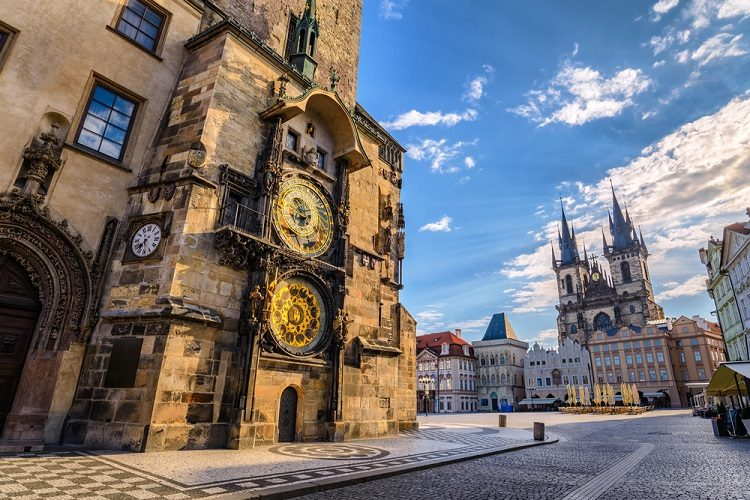
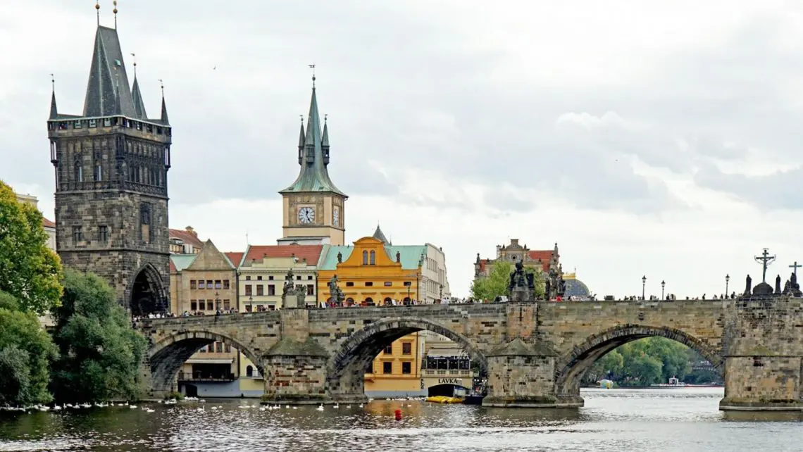

Curiosidade aleatória - um lugar onde eu moraria: Praga
Staroměstské náměstí

Praça da Cidade Velha ou Staroměstské náměstí é uma praça histórica no bairro da Cidade Velha de Praga, capital da República Tcheca. Está localizado entre a Praça Venceslau e a Ponte Carlos.
Pražský orloj
Prague Orloj Pražský orloj é um relógio astronômico medieval ligado à Antiga Prefeitura de Praga, capital da República Tcheca. Ele foi instalado pela primeira vez em 1410, tornando-se o terceiro relógio astronômico mais antigo do mundo e o mais antigo ainda em operação.
O Orloj sofreu grandes danos em maio de 1945, durante a revolta de Praga na segunda guerra mundial, quando os nazistas dispararam no lado sudoeste da Praça da Cidade Velha de vários veículos blindados em uma tentativa frustrada de destruir um dos centros da revolta.
O salão e os prédios próximos queimaram, junto com as esculturas de madeira no relógio e o mostrador do calendário. Após um esforço significativo, a maquinaria e os Apóstolos de madeira foram restaurados e o Orloj começou a funcionar novamente em 1948.
Karlův Most

Uma das mais antigas pontes da Europa, a magnífica Ponte Carlos Karlův Most possui uma extensão de 520 metros. Sua construção começou em 1357 a pedido do rei Carlos IV, e foi finalizada a princípios do século XV. Sendo ela a única forma de atravessar o rio, a Ponte Carlos transformou-se na via de comunicação mais importante entre a Cidade Velha, o Castelo de Praga e as zonas adjacentes até 1841.
A ponte é protegida por três torres distribuídas entre seus dois lados, duas delas em Malá Strana e as restantes na Cidade Velha. A torre localizada no lado da Cidade Velha é considerada por muitos como uma das construções mais impressionantes da arquitetura gótica no mundo.
Praga à noite

A vida noturna de Praga tem uma reputação que agora se espalha muito além do continente. Os visitantes vêm aqui em busca daqueles míticos bares onde a cerveja é mais barata que a água, onde o desejo tcheco de pivo não tem fim. Claro, você pode encontrar essas coisas, mas uma noite em Praga é muito mais do que o estereótipo, sendo os melhores lugares para sair em Praga são quase sempre fora do centro, com exceção de algumas jóias fáceis de encontrar para os turistas.